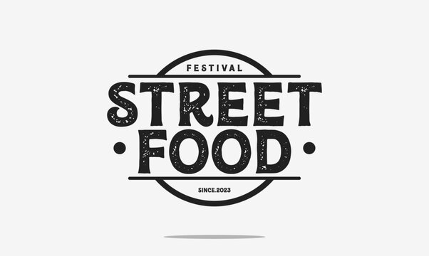
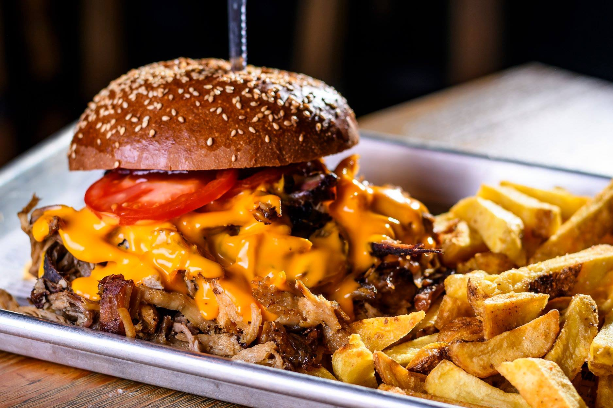

Üdvözlünk a Street-Food Kajáldában!
Bemutatkozás
Minőségi alapanyagokból készült street-food ételekkel várunk. Kóstold meg finomságainkat!
Étvágycsináló!
Füstös illatok, roppanós falatok, szaftos harapások – a street food világa tele van izgalmas ízekkel és friss élményekkel! Merülj el az utcai gasztronómia lüktető forgatagában, ahol minden falat egy új kaland! 🍔🌮🍟
Gyere és próbáld ki az ellenállhatatlan burgerünket!